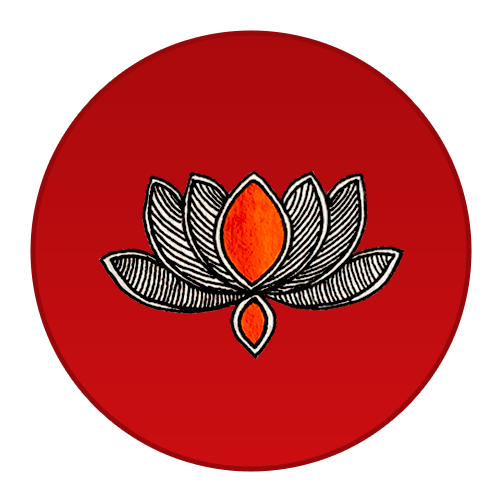

Sundarakala
Indian folk art · from Madras
Born in Madras in 2018, Sundarakala is an art studio rooted in love for India’s illustrative folk art forms — intricate mandalas and Mithila painting. Run by artist & founder Prasannavika, every piece begins as a careful, hand-drawn illustration.
Workshops, commissions, prints & merch — just say hello.
@sundarakala